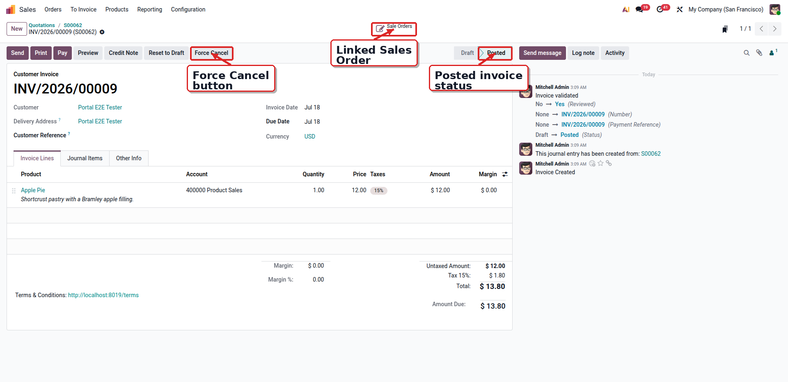
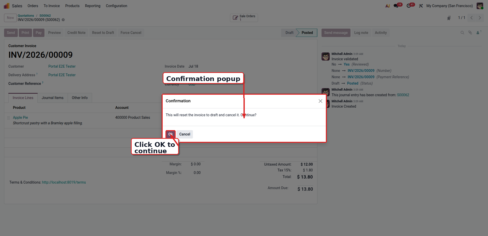
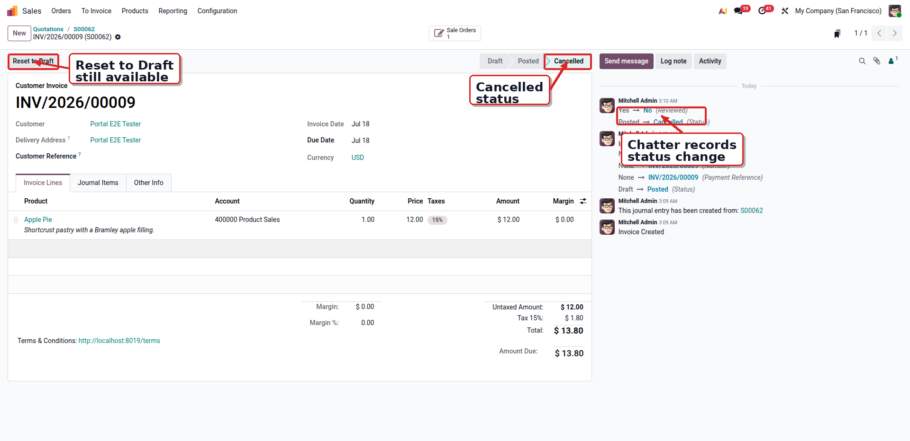
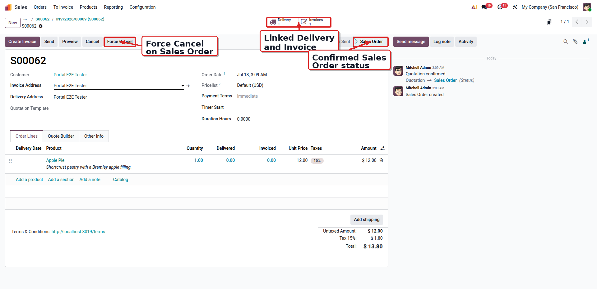

Adds Force Cancel buttons to sale orders, purchase orders, transfers and invoices. Cancelling an order cascades to its transfers and invoices, and done transfers reverse their stock moves to restore quantities.
Cancelling a sale or purchase order also cancels its transfers and invoices.
Done transfers reverse their moves to restore product quantities.
Posted invoices are reset to draft and cancelled in one click.
Install the module on a Sales, Purchase, Inventory and Accounting database.
Open a confirmed or done document.
Click Force Cancel and confirm the warning.
Linked documents are cancelled and stock restored.



